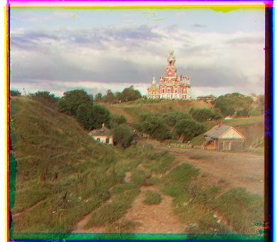
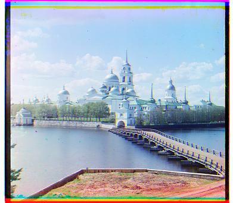
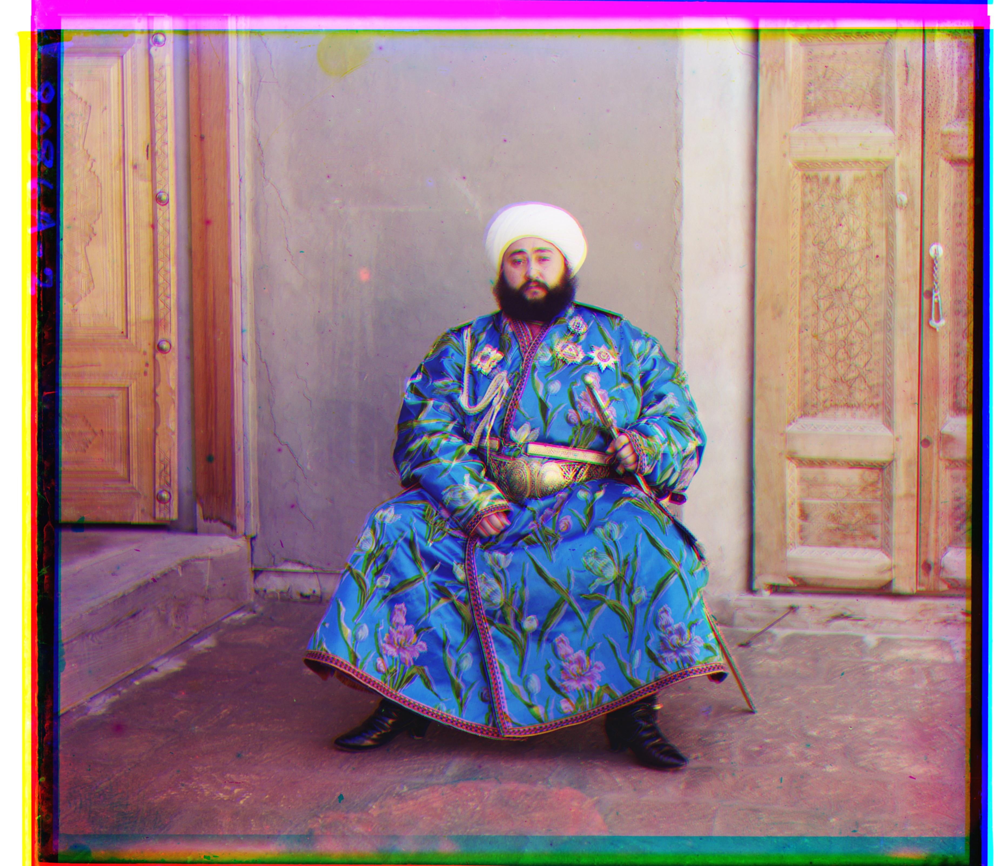
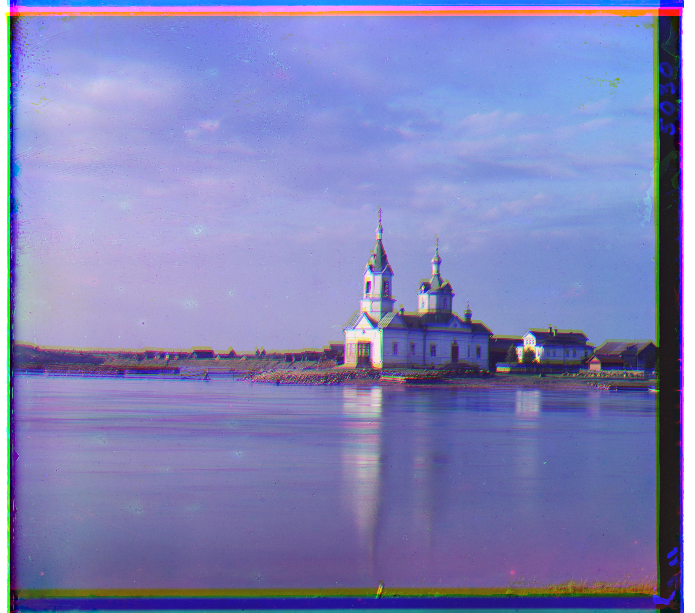
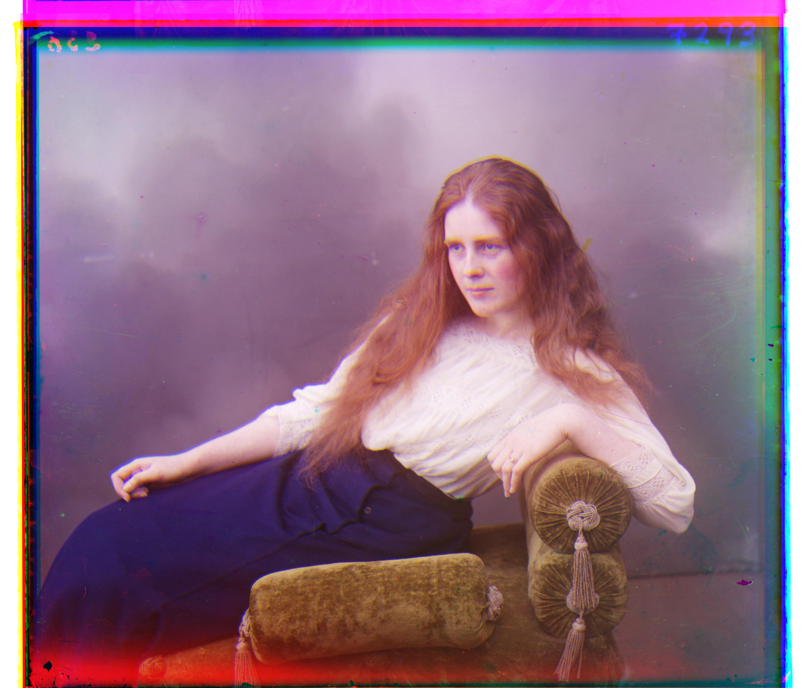
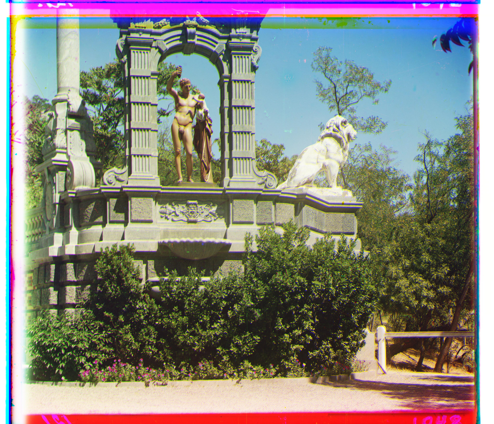
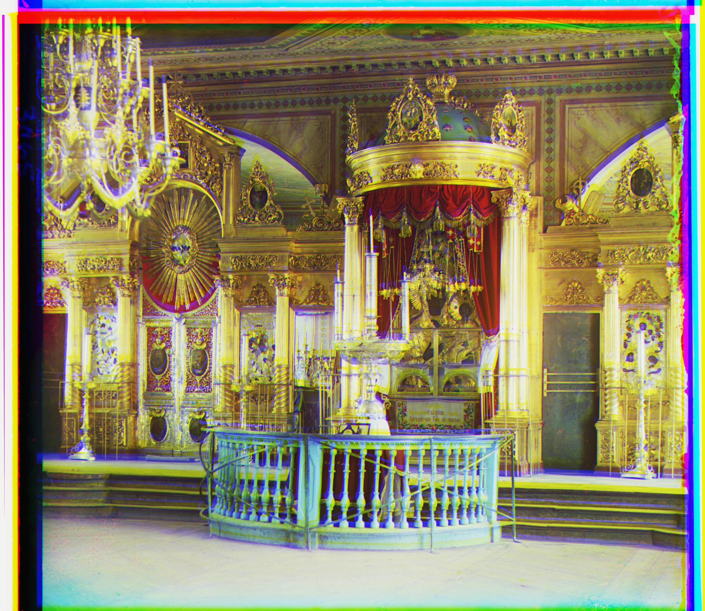
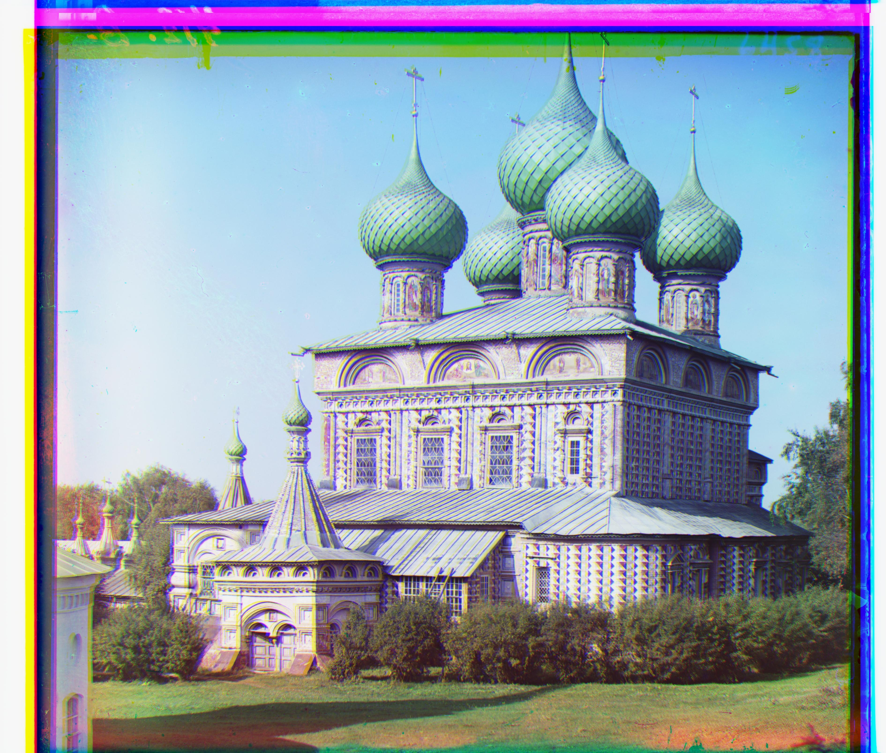
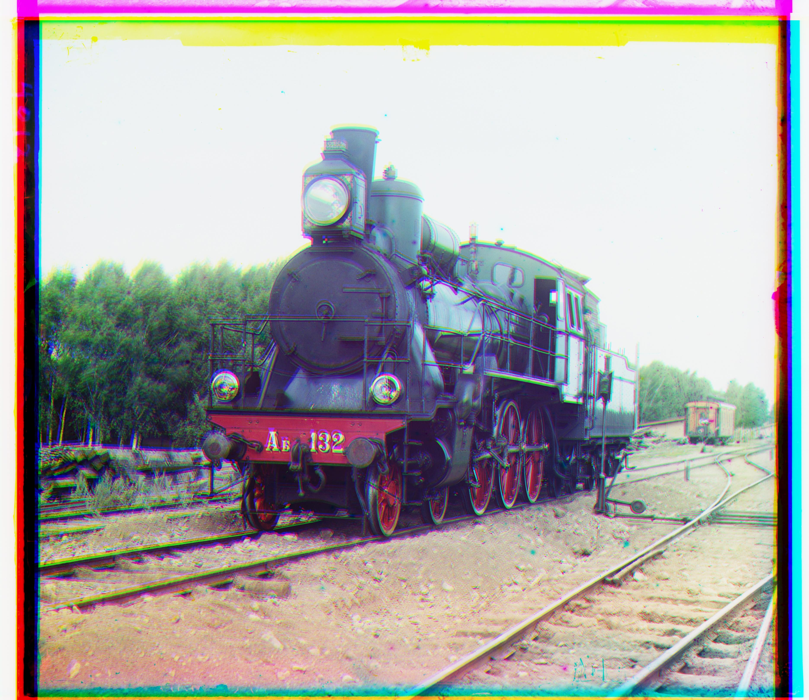

For the low resolution images, the algorithm used is a simple naive search over the x and y axis. It moves the red and green channels over a range of 10 pixels ([-10, 10]) on both axes and tries to find the optimal allignment by using the L2 norm. Before the algorithm is run, I have cropped the borders by a constant value to avoid them interfering with the pixels within the image. Then, a sobel filter is applied in order to highlight edges and make a stronger image comparison with the L2 norm. It then translates the images and stacks the channels to create the final image. The three examples are shown below.
 
For the high resolution images, a pyramid method has been used, where images in each of the channels are scaled to 0.5x their size and stored in their respective arrays. Then the same process of cropping borders(greater constant value due to larger size of image) and applying the sobel filter is done. For the search itself, the algorithm starts with the smallest image first and searches over (-10, 11) in both directions to find optimal fit. The image and best translation values are then doubled and the process repeats until the nomral size image is used and the final translation values are found. The 3 channels are then stacked to give the final image. Some examples are shown below
      I have taken some inspiration from ChatGPT and pretrained LLM's to create the structure for some parts of the website.
Back to Main Page